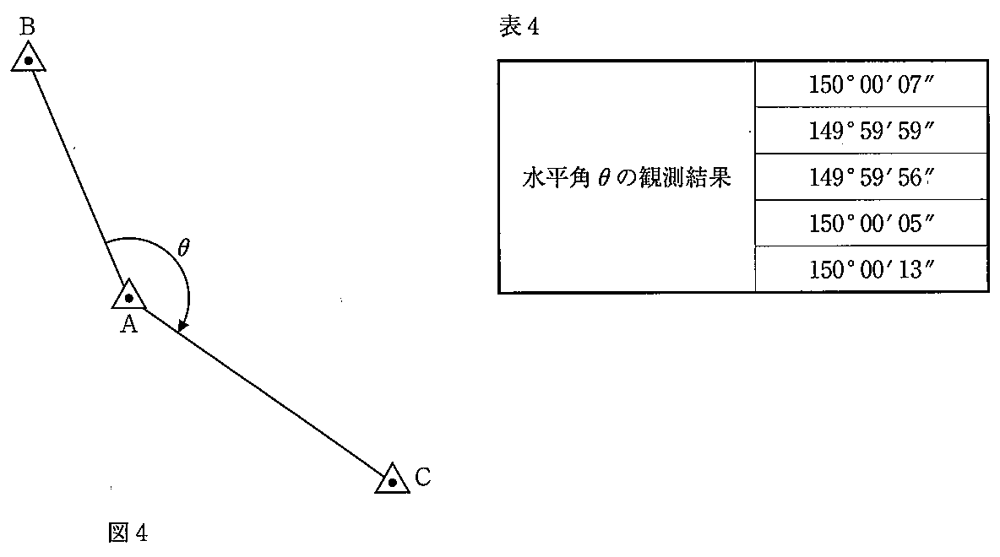
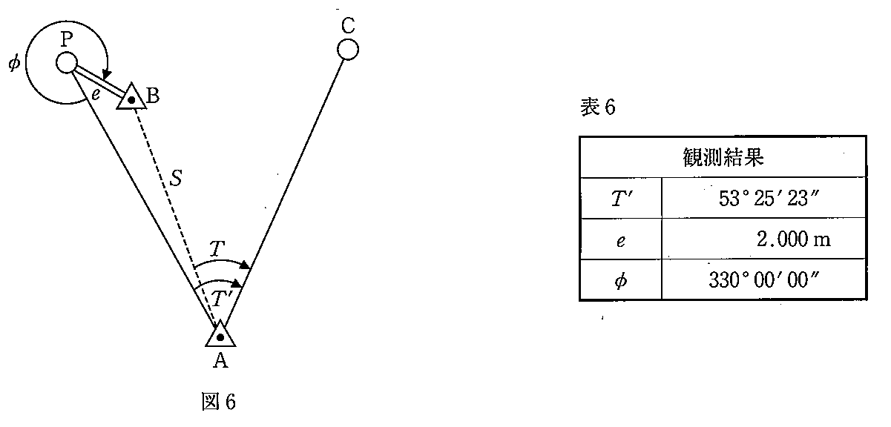
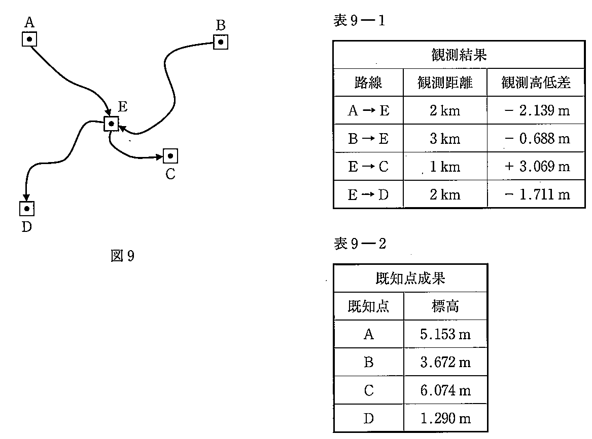
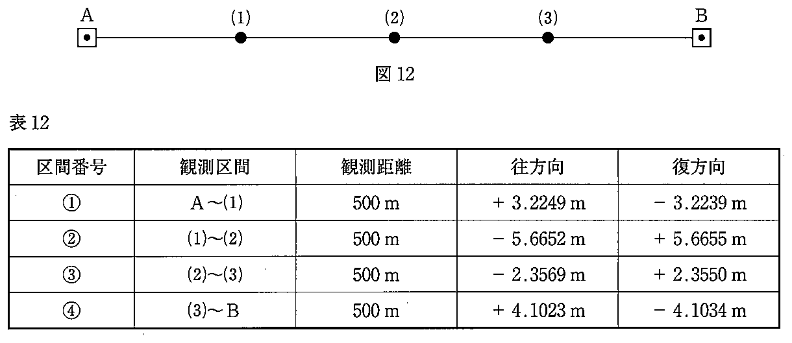
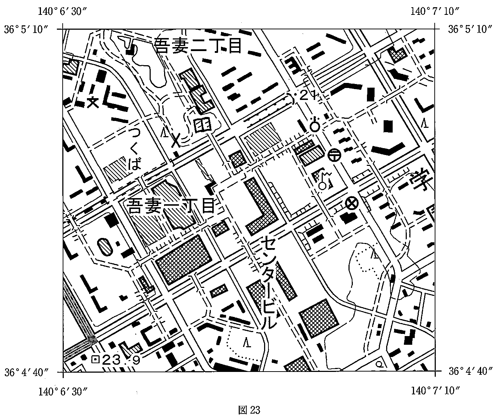
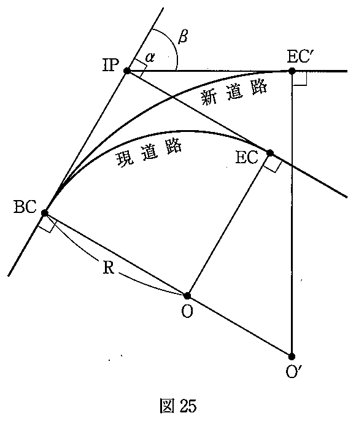
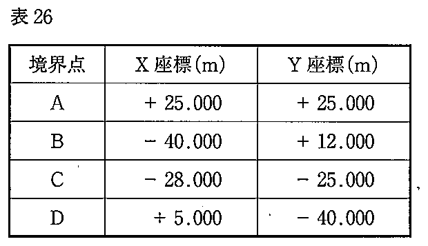

平成23年度（H23）計算問題
測量士補試験の計算問題 10 問。紙と鉛筆で解いてから「答えと解説」を開いてください。関数の値は試験の巻末の関数表を使います。
No.4多角
図4に示すように，点Aにおいて，点Bを基準方向として点C方向の水平角θを同じ精度で5回観測し，表4に示す観測結果を得た。水平角θの最確値に対する標準偏差は幾らか。最も近いものを次の中から選べ。
なお，関数の数値が必要な場合は，巻末の関数表を使用すること。

- 2.4″
- 3.0″
- 3.6″
- 6.0″
- 6.7″
答えと解説
答え 2
同じ精度で測った値の最確値（いちばん確からしい値）は平均です。149°59′59″ は 150° に 1″ 足りないので −1″、149°59′56″ は −4″ として、秒だけ平均します。
20 ÷ 5 ＝ 4 → 150°00′04″
最確値の標準偏差（平均した値が、どれくらいばらつくかの目安）は、残差（観測値 − 平均）を 2 乗して足し、n(n − 1) で割って √ を付けます。n は測った回数 5 です。
残差の 2 乗の和 ＝ 9 ＋ 25 ＋ 64 ＋ 1 ＋ 81 ＝ 180
180 ÷ (5 × 4) ＝ 9
√9 ＝ 3 → 3.0″
No.6多角
トータルステーションを用いた基準点測量において，図6に示すように既知点Aから既知点Bを基準に水平角を観測して新点Cの方向角を求めようとしたところ，既知点Aから既知点Bへの視通が確保できなかった。そのため，既知点Bの近傍に偏心点Pを設けて，水平角T′，偏心距離e及び偏心角φの観測を行い，表6の観測結果を得た。∠BAC（T）は幾らか。最も近いものを次の中から選べ。
ただし，既知点AB間の距離S＝2,000.000 mである。
また，角度1ラジアンは，2″×10⁵とする。
なお，関数の数値が必要な場合は，巻末の関数表を使用すること。

- 53°21′33″
- 53°22′03″
- 53°23′13″
- 53°23′43″
- 53°24′13″
答えと解説
答え 4
A から B が見えないので、B の近くの P（偏心点）を見て角 T′ を測り、あとで B の向きとの差 x を直します（偏心補正）。角 φ（偏心角）は、P で A の向きから右回りに B の向きまで測った角で、330° もあります。P の内側の角は、ぐるっと 1 周の残りです。
B から、直線 PA までの長さは
A から 2,000 m 先で 1 m ずれて見えるので、角 x は（小さい角なので、長さ ÷ 距離 がそのままラジアン）
0.0005 × (2 × 10⁵)″ ＝ 100″ ＝ 1′40″
図では、B の向きのほうが P の向きより C に近いので、T は T′ より x だけ小さい角です。
No.9水準
図9に示すように，既知点A，B，C及びDから新点Eの標高を求めるために水準測量を実施し，表9－1に示す観測結果を得た。新点Eの標高の最確値は幾らか。最も近いものを次の中から選べ。
ただし，既知点の標高は表9－2のとおりとする。

- 2.995 m
- 2.998 m
- 3.001 m
- 3.003 m
- 3.005 m
答えと解説
答え 4
4 つの既知点から、それぞれ E の標高を出します。高低差は「矢印の先が、矢印の元より何 m 高いか」です。E→C、E→D は E から出ていく向きなので、C・D から E を出すときは引きます。
B から 3.672 − 0.688 ＝ 2.984 m
C から 6.074 − 3.069 ＝ 3.005 m
D から 1.290 − (−1.711) ＝ 1.290 ＋ 1.711 ＝ 3.001 m
水準測量は距離が短いほど正確なので、重さ（どれくらい信用するか）を距離に反比例させて平均します。
3.000 m との差だけ（mm で）平均すると、A から順に 14、−16、5、1 なので
＝ (42 − 32 ＋ 30 ＋ 3) ÷ 14 ＝ 43 ÷ 14 ≒ 3 mm
最確値 ＝ 3.000 ＋ 0.003 ＝ 3.003 m
No.12水準
図12に示すように，水準点Aから固定点(1)，(2)及び(3)を経由する水準点Bまでの路線で，公共測量における1級水準測量を行い，表12に示す観測結果を得た。再測すべきと考えられる区間番号はどれか。次の中から選べ。
ただし，往復観測値の較差の許容範囲は，Sをkm単位で表した片道の観測距離としたとき，2.5 mm√Sとする。
なお，関数の数値が必要な場合は，巻末の関数表を使用すること。

- ①
- ②
- ③
- ④
- 再測の必要はない
答えと解説
答え 3
較差は、行き（往方向）と帰り（復方向）で測った高低差の食いちがいです。帰りは符号が逆になるので、往方向と復方向を足したものが較差になります。
② −5.6652 ＋ 5.6655 ＝ 0.0003 m ＝ 0.3 mm
③ −2.3569 ＋ 2.3550 ＝ −0.0019 m → 大きさ 1.9 mm
④ 4.1023 − 4.1034 ＝ −0.0011 m → 大きさ 1.1 mm
どの区間も観測距離は 500 m ＝ 0.5 km なので、許容範囲はどこも 2.5√0.5 mm です。√ を出さなくても、「較差 ÷ 2.5」を 2 乗して 0.5 と比べれば同じことです。大きいほうから比べます。
④ 1.1 ÷ 2.5 ＝ 0.44 0.44² ≒ 0.19 ＜ 0.5 → 中に入る（①・②は④より小さいので中）
許容範囲を超えるのは③だけなので、再測するのは③です。
No.13地形
トータルステーションを用いた縮尺1/1,000の地形図作成において，傾斜が一定な直線道路上に在る点Aの標高を測定したところ66.6 mであった。一方，同じ直線道路上の点Bの標高は，59.7 mであり，点Aから点Bの水平距離は54.0 mであった。
このとき，点Aから点Bを結ぶ直線道路とこれを横断する標高62 mの等高線との交点は，この地形図上で点Aから何cmの地点を横断するか。最も近いものを次の中から選べ。
- 1.8 cm
- 2.0 cm
- 2.8 cm
- 3.2 cm
- 3.6 cm
答えと解説
答え 5
A から B へ一定の傾きで下る道路です。下がった高さと進んだ水平距離は比例するので、標高 62 m の等高線（同じ高さの所を結んだ線）と交わる所までの水平距離は、標高の差の比で出ます。
A から 62 m まで下がる高さ ＝ 66.6 − 62 ＝ 4.6 m
＝ 54 × 2/3 ＝ 36 m
縮尺 1/1,000 では、実際の 1 m が地図上の 1 mm なので、36 m は 36 mm ＝ 3.6 cm。
No.17写真
画面距離10.5 cmのデジタル航空カメラを使用して，撮影高度2,800 mで数値空中写真の撮影を行った。このときの撮影基準面での地上画素寸法は幾らか。最も近いものを次の中から選べ。
ただし，撮影基準面の標高は0 mとし，デジタル航空カメラの撮像面での画素寸法は9 μmとする。
- 18 cm
- 21 cm
- 24 cm
- 27 cm
- 30 cm
答えと解説
答え 3
地上画素寸法は、写真の 1 画素（小さなマス 1 つ）に写る地面の長さです。画面距離は、レンズから撮像面までの長さ。レンズをはさんだ上と下の三角形が同じ形なので、長さの比が等しくなります。撮影基準面は標高 0 m なので、レンズから地面までは 2,800 m です。
単位を m にそろえます（1 μm ＝ 0.000001 m）。
地上画素寸法 ＝ 0.000009 × 2,800 ÷ 0.105
＝ 0.0252 ÷ 0.105 ＝ 0.24 m ＝ 24 cm
No.18写真
画面の大きさ23 cm×23 cmのフィルム航空カメラを用いて，撮影縮尺1/8,000，航空機の対地速度200 km/h，隣接空中写真間の重複度60%で平たんな土地の鉛直空中写真を撮影した。このときのシャッター間隔は幾らか。最も近いものを次の中から選べ。
ただし，航空機は風などの影響を受けず，一定の対地速度で飛行するものとする。
- 6秒
- 13秒
- 19秒
- 24秒
- 36秒
答えと解説
答え 2
シャッター間隔は、1 枚目を撮ってから 2 枚目を撮るまでの時間です。その間に飛行機が進む距離（撮影基線長）を出して、速さで割ります。
1 枚の幅 撮影縮尺 1/8,000 なので、写真の 23 cm は地面では 8,000 倍です。
進む距離 となりの写真と 60% 重なるので、進むのは残りの 40% です。
時間 速さを 1 秒あたりに直します。1 時間は 3,600 秒です。
736 ÷ 55.6 ≒ 13.2 秒 → 13 秒
No.23地図
図23は，国土地理院発行の1/25,000地形図の一部（縮尺を変更，一部を改変）である。この図に在る交番の建物の経緯度は幾らか。最も近いものを次の中から選べ。
ただし，図23の四隅に表示した数値は，経緯度を表す。

図の出典：国土地理院「1/25,000地形図」（測量士補試験の問題に掲載されたもの）
- 北緯36°04′53″ 東経140°07′01″
- 北緯36°04′55″ 東経140°07′01″
- 北緯36°04′59″ 東経140°06′42″
- 北緯36°05′01″ 東経140°06′57″
- 北緯36°05′04″ 東経140°06′42″
答えと解説
答え 3
交番の地図記号は、警棒を 2 本ななめに交差させた形（×）です。これを丸で囲んだ記号は警察署なので、取りちがえないこと。求めるのは交番の「建物」の位置なので、記号のすぐ下にある黒い四角を測ります。四隅の経緯度が分かっているので、建物がその間のどこにあるかを、図の長さの比で割り出します。右へ行くほど経度が大きく、下へ行くほど緯度が小さくなります。
経度（横）
左はしから交番まで ＝ 40 × 40 ÷ 130 ≒ 12″
交番 ＝ 140°06′30″ ＋ 12″ ＝ 140°06′42″
緯度（縦）
上はしから交番まで ＝ 30 × 44 ÷ 120 ＝ 11″
交番 ＝ 36°05′10″ − 11″ ＝ 36°04′59″
図の出典：国土地理院「1/25,000地形図」（測量士補試験の問題に掲載されたもの）。赤・青の線と文字は当サイトが書き足しました
No.25応用
図25に示すように，曲線半径R＝600 m，交角α＝90°で設置されている，点Oを中心とする円曲線から成る現在の道路（以下「現道路」という。）を改良し，点O′を中心とする円曲線から成る新しい道路（以下「新道路」という。）を建設することとなった。
新道路の交角β＝60°としたとき，新道路BC～EC′の路線長は幾らか。最も近いものを次の中から選べ。
ただし，新道路の起点BC及び交点IPの位置は，現道路と変わらないものとし，円周率π＝3.14とする。
なお，関数の数値が必要な場合は，巻末の関数表を使用すること。

- 1,016 m
- 1,039 m
- 1,065 m
- 1,088 m
- 1,114 m
答えと解説
答え 4
円曲線は、まっすぐな道と道をなめらかにつなぐ円の一部です。新道路の半径 R′ が分かれば、路線長は弧の長さとして出せます。手がかりは、BC と IP の位置が変わらないこと、つまり BC から IP までの長さ（接線の長さ）が同じことです。
接線の長さ 円曲線の中心角は交角に等しく、中心と IP を結ぶ線がそれを半分に分けます。現道路は交角 90° なので半分は 45°。直角三角形 BC・IP・O で
新道路の半径 交角 60° の半分は 30°。直角三角形 BC・IP・O′ で
＝ 600 × 1.73205 ≒ 1,039.2 m
路線長 半径 1,039.2 m、中心角 60° の弧の長さです。
No.26応用
境界点A，B，C及びDを結ぶ直線で囲まれた四角形の土地の測量を行い，表26に示す平面直角座標系上の座標値を得た。この土地の面積は幾らか。最も近いものを次の中から選べ。
なお，関数の数値が必要な場合は，巻末の関数表を使用すること。

- 2,303 m²
- 2,403 m²
- 2,503 m²
- 2,603 m²
- 2,703 m²
答えと解説
答え 3
X は北（上）、Y は東（右）です。4 つの点を図に置き、ぴったり囲む四角形の面積から、まわりの余り①〜⑤を引きます。長さは全部、座標の引き算で出ます。
② 横 25 − 12 ＝ 13、縦 65 → 13 × 65 ÷ 2 ＝ 422.5
③ 横 12 − (−25) ＝ 37、縦 −28 − (−40) ＝ 12 → 37 × 12 ÷ 2 ＝ 222
④ 横 −25 − (−40) ＝ 15、縦 5 − (−28) ＝ 33 → 15 × 33 ÷ 2 ＝ 247.5
⑤ 横 15、縦 12 の長方形 → 15 × 12 ＝ 180
余りの合計 ＝ 650 ＋ 422.5 ＋ 222 ＋ 247.5 ＋ 180 ＝ 1,722 m²
座標から面積を出す方法（座標法）でも確かめられます。「その点の X ×（次の点の Y − 前の点の Y）」を全部の点で足すと、面積の 2 倍です。
B −40 × (−25 − 25) ＝ −40 × (−50) ＝ 2,000
C −28 × (−40 − 12) ＝ −28 × (−52) ＝ 1,456
D 5 × {25 − (−25)} ＝ 5 × 50 ＝ 250
合計 5,006 → 5,006 ÷ 2 ＝ 2,503 m²